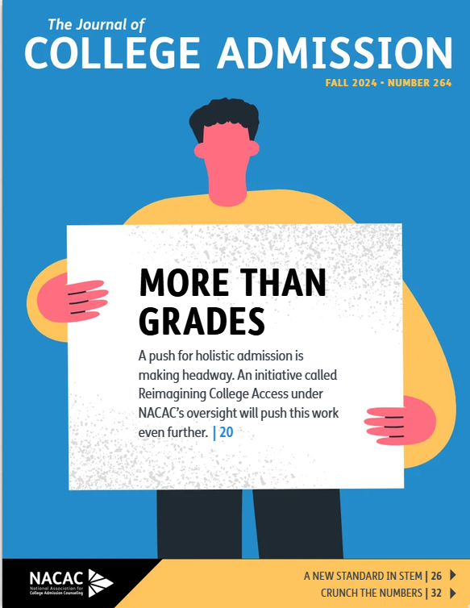
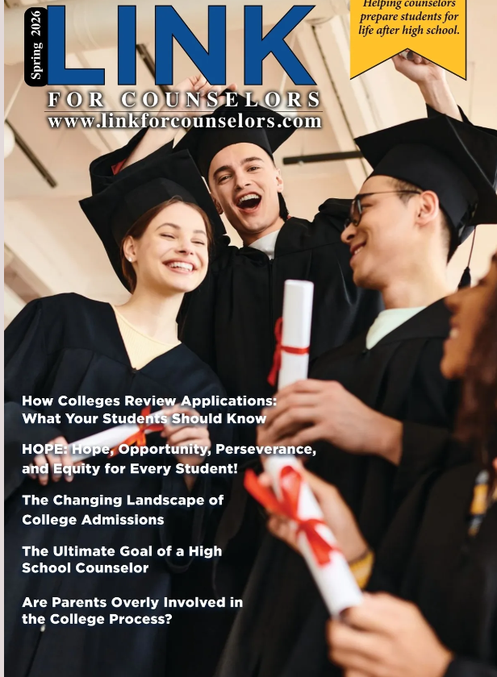
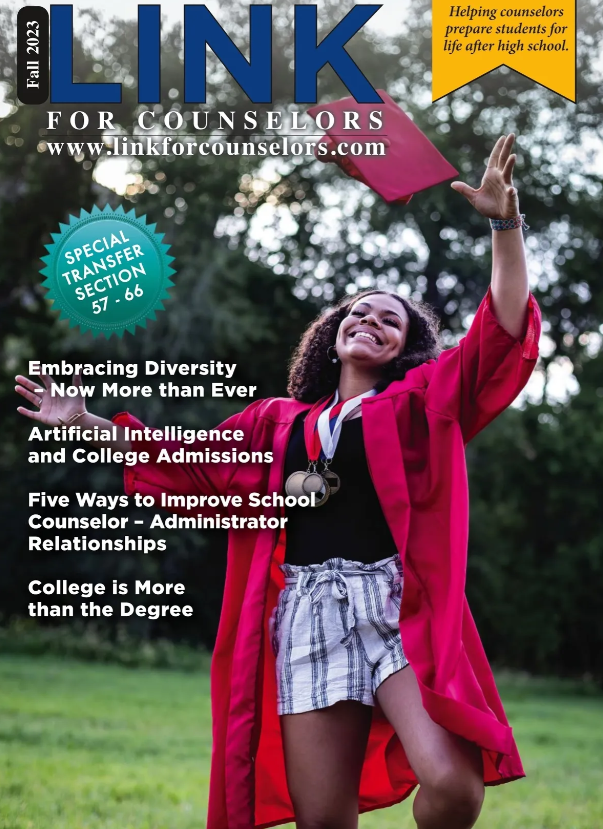
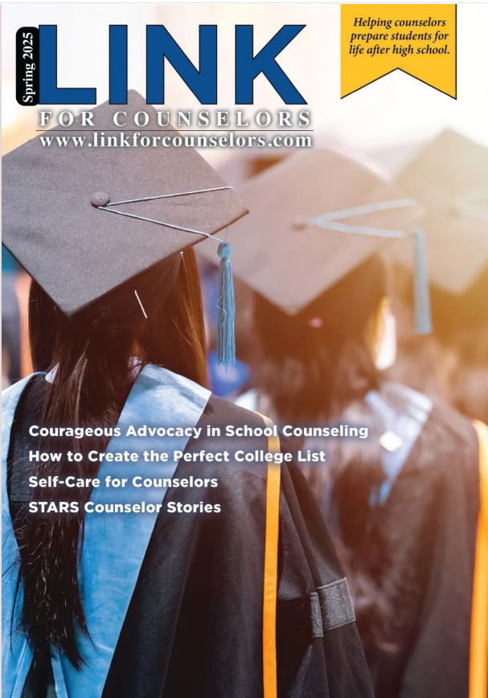
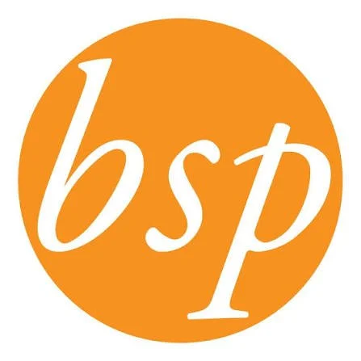
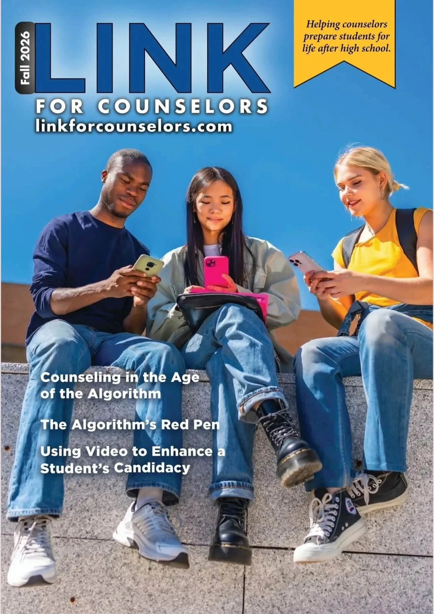

Thought Leadership
Thought Leadership
Priscilla often contributes to magazines and mainstream media. Here are examples of articles!

NACAC Journal: Co-authored article. Pages 16-18
Forbes BrandVoice Article
Link for Counselors Article

Link for Counselors Magazine: Co-Authored article. Pages 34-37
University of California Article

Link for Counselors Magazine: pages 10-11

Link for Counselors Magazine Co-Authored article. Pages 18-21
Contributor for the Washington Post

Bezos Scholars Program (last article)
Article featured across all state school counselor association newsletters)

Link for Counselors Magazine: pages 44-45